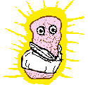

And the Wumpalump was true. He sent his Word. He sent his little love
lump into the world to save the world from the nothingness.
And the Wumpalump was true. He sent his Word. He sent his little love
lump into the world to save the world from the nothingness.
And the little love lump was in the Wumpalump. And all
the Wumpalump's love, joy, and peace were in his Word.

And the little love lump felt all the Wumpalump's health and wholeness and
as he touched the little lumps who thought they lacked... they were made
whole. And as he touched the little lumps who thought they were hungry... they
were filled.
And the little love lump went about giving all his father's love, joy, and
peace. And as these things flowed through him the nothingness melted.
But some little lumps there were who did not understand for they still looked
to the nothingness. They still saw what they lacked. They wanted a rich,
powerful little lump to subdue the other little lumps and take away the
loneliness, pain, and confusion.
But the little love lump refused to subdue anyone. "Be perfect,"
he said, "As the Wumpalump is perfect. For he maketh his rain to fall
on the just and the unjust!"
This made the little lumps mad. "But we want to be saved!" they shouted.
"Save us! Save us! Where is the kingdom you promised?"
But the little love lump refused. "My kingdom is not of this
world," he said. And within he felt all love, all joy, all peace...
the gentle touch of the Wumpalump.